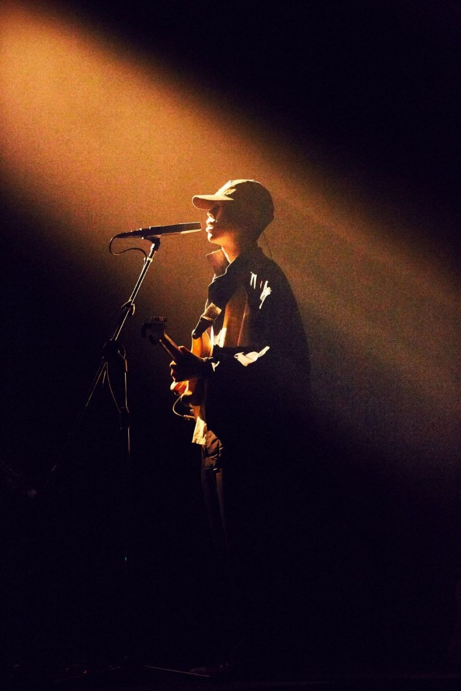
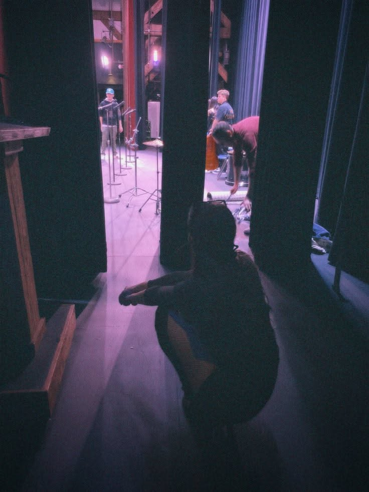
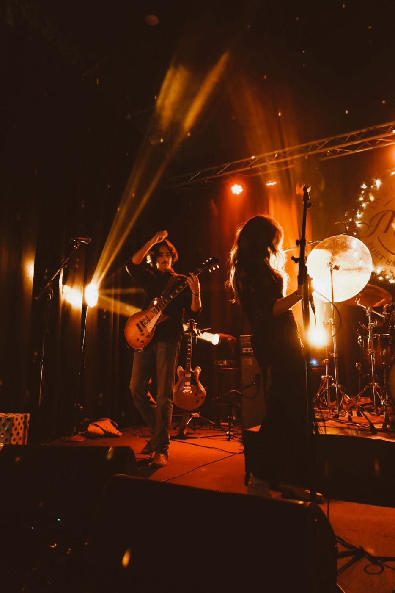
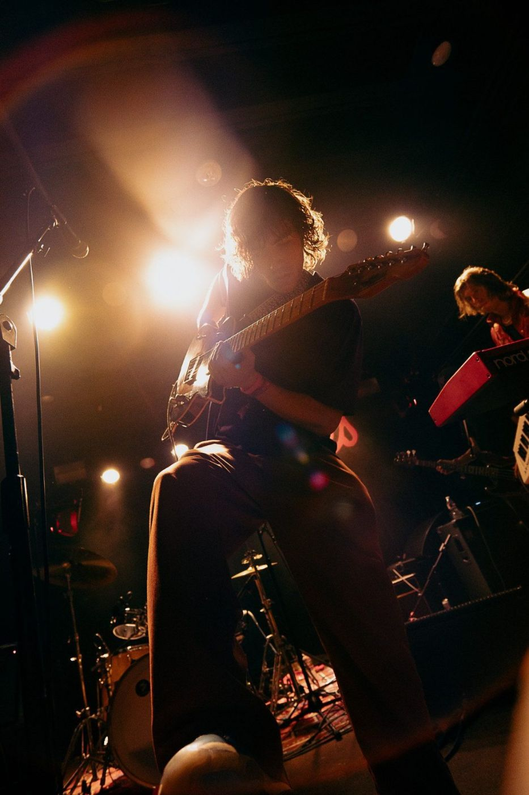

첼로 한 대로 동네를 한 바퀴 도는 사람

March 2, 2026
interviewee살림
첼로 한 대로 동네를 한 바퀴 도는 사람
질문 자기소개를 부탁드립니다.
답 살림이라는 이름으로 첼로를 연주하고 노래를 만듭니다. 서촌에 산 지 6년이 됐고, 곡은 대부분 동네를 걷다가 떠오릅니다.

질문 첼로를 고른 이유가 궁금합니다.
답 열두 살 때 학교 오케스트라에서 남는 악기가 첼로뿐이었습니다. 고른 것이 아니라 남은 것이었습니다. 그런데 앉아서 악기를 안고 연주하는 자세가 저에게 맞았습니다.
질문 곡을 만들 때 먼저 정하는 것이 있습니까?
답 걸음 속도입니다. 천천히 걸을 때 만든 곡은 템포가 60 근처이고, 급하게 걸을 때 만든 곡은 100을 넘습니다. 가사는 가장 나중입니다.

질문 공연 중 곡과 곡 사이를 길게 두는 이유가 있습니까?
답 관객이 박수를 칠지 말지 고민하는 3초를 좋아합니다. 그 3초 동안 다음 곡을 조율합니다. 조율 소리도 공연의 일부라고 생각합니다.
질문 하프레스트 무대는 어땠습니까?
답 객석이 40석이라 맨 뒷줄 관객의 표정까지 보였습니다. 큰 무대에서는 조명 때문에 객석이 보이지 않습니다. 이번에는 관객과 같은 불빛 아래에 있었습니다.

질문 거리 공연도 합니까?
답 한 달에 두 번, 토요일 오후에 동네 공원에서 연주합니다. 앰프 없이 첼로 소리만으로 닿는 거리가 15m 정도라서 관객도 그 안에 앉습니다.
질문 첼로 말고 다른 악기도 씁니까?
답 녹음할 때는 오래된 업라이트 피아노를 함께 씁니다. 조율이 조금 틀어져 있는데, 그 소리가 동네 분위기와 맞아서 고치지 않았습니다.

질문 공연 기록 사진에서 처음 눈에 들어온 것은 무엇입니까?
답 활을 든 오른손이 생각보다 높이 올라가 있었습니다. 연주하는 동안은 몰랐던 습관입니다. 그 사진을 보고 활 쓰는 법을 조금 바꿨습니다.
질문 올해 계획을 듣고 싶습니다.
답 동네 이름을 딴 곡 열두 개를 모아 앨범을 낼 계획입니다. 지금까지 일곱 곡을 만들었습니다.